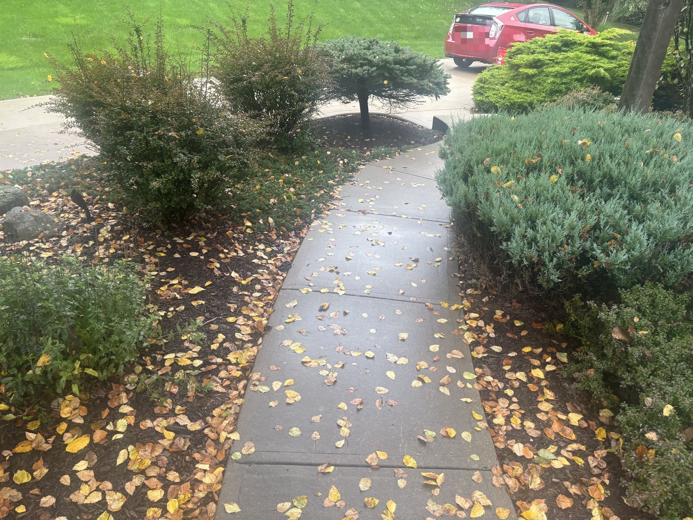

Visit 1
We cut back the perennials winter will hurt. The leaves come off the lawn and out of the beds, and we haul it all away.

Free, takes 10 minutes
Riley walks your yard for about 10 minutes. Then I text you pictures of anything that could hurt it over the winter. You don't have to be home.
If nothing will hurt your yard this winter, I'll tell you that too. No pitch.
Riley takes a picture of every problem on the walk.
Where this comes from: Ohio State Penn State Iowa State University of Minnesota
This one is a sample. Yours has pictures of your own yard, and only the things Riley finds.
You always get 3 options with a price for each one.
Every price comes from your walk.
We cut back, you kick back.
We cut back the perennials winter will hurt. The leaves come off the lawn and out of the beds, and we haul it all away.
One more leaf pass, so your yard goes into winter clean.
We have room for 25 yards. Booking closes Friday 11/6.
Text me the word WALK. Riley will stop by on a day a crew is near you.
(440) 667-9642